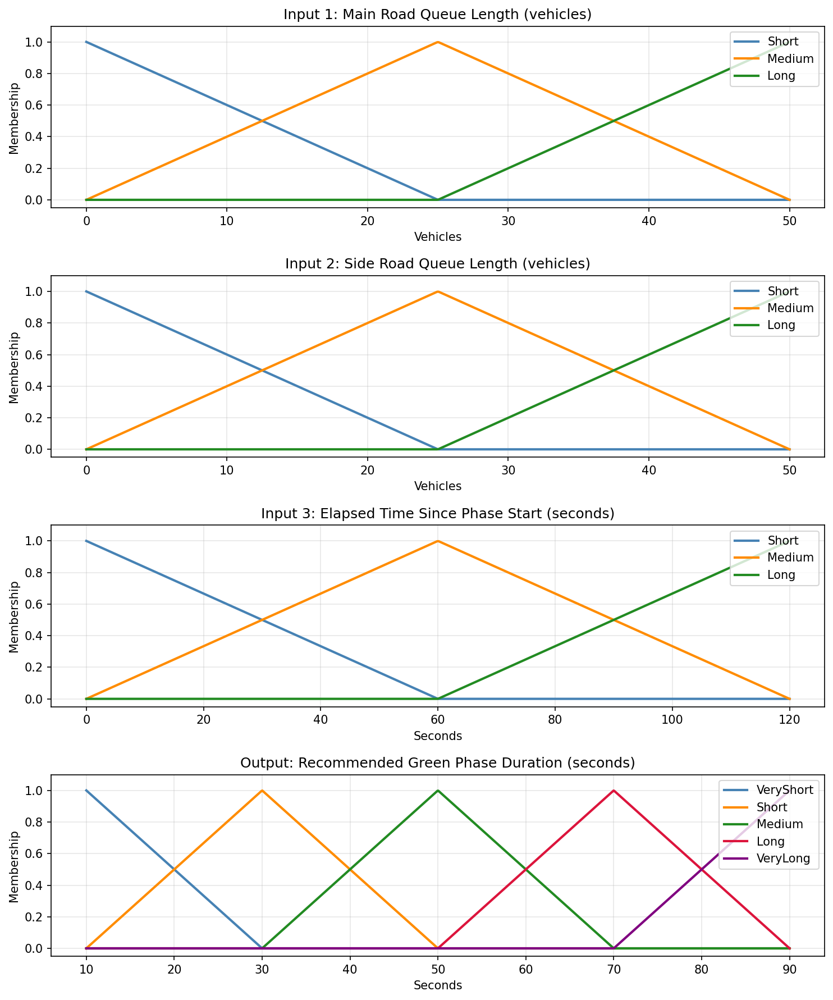
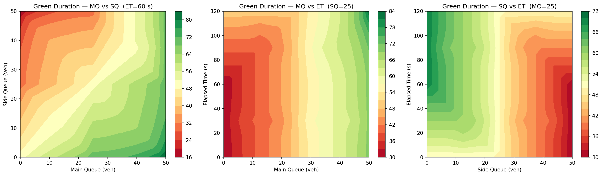
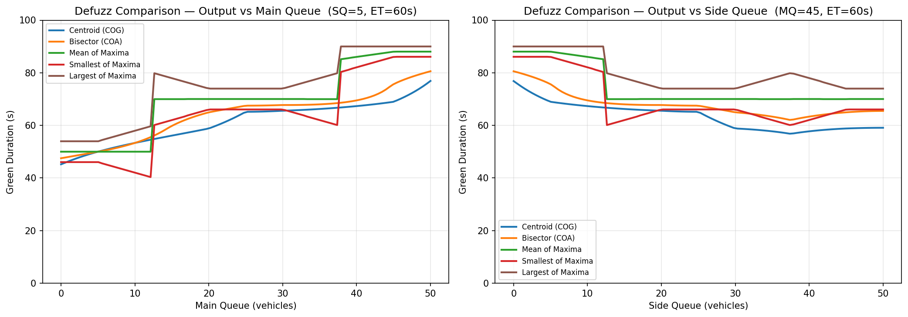
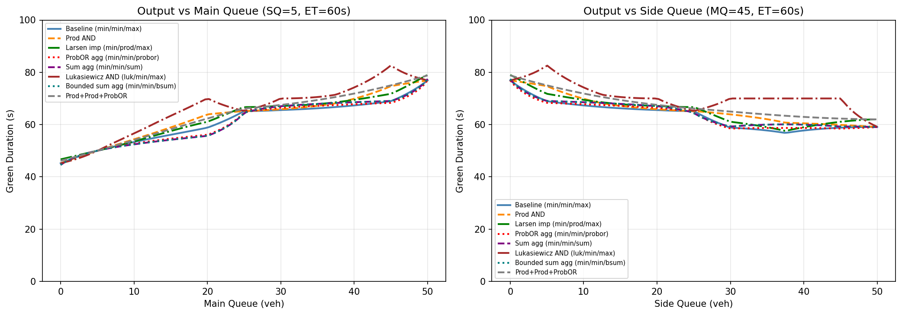

A Mamdani fuzzy controller that adapts green-phase duration to live traffic conditions — designed, then compared across operators and defuzzification methods.
Fixed-timing traffic signals waste road capacity — they hold a red against an empty approach and cut a green short on a busy one. A fuzzy controller can reason in human terms ("if traffic is heavy and the queue is long, extend the green") without a precise mathematical model of the junction.
Approach
Designed membership functions for two inputs — traffic density and queue length — and one output, green-phase duration.
Authored the rule base mapping input combinations to timing decisions.
Compared fuzzy operators and defuzzification methods (e.g. centroid vs alternatives) to see how each shapes the control surface.
Evaluated the resulting system's responsiveness across the input range.
Results
The finished controller produces a smooth, monotonic control surface: green time rises sensibly with both density and queue length, with no dead zones or discontinuities. The operator and defuzzification comparisons showed how much the same rule base can shift behaviour depending on those choices — the design isn't just the rules, it's the inference machinery around them. The work was assessed at distinction level.

Input / output membership functions.

Control surface from the rule base.

Defuzzification-method comparison.

Fuzzy-operator comparison.
What I took away
Fuzzy control is a clean way to encode expert intuition where a precise model is impractical.
The defuzzification method is a real design decision, not a default — it reshapes the output.
Visualising the control surface is the fastest way to catch a bad rule base.